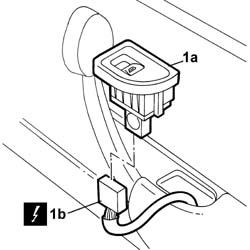

7010M10 Rear door electric window control SWITCH - left or right - R.R.
- Path
- Procedures > 70 FITTINGS > 7010 passenger compartment rear side doors > 7010M REAR SIDE DOOR ELECTRIC WINDOWS > 7010M10 Rear door electric window control SWITCH - left or right - R.R.
- Kind
- repair procedure (removal / refitting; the operation number is the code)
- Applies to
- all engines; all production periods
- Interactive page
- https://sloeber94.github.io/elrnDB-lThss/en/#/80110
Applies to: all engines; all production periods
 Removing
Removing
 Refitting
Refitting- Disconnect the negative battery terminal.
1. Release the switch (1a) from the housing and disconnect the electrical connector (1b).
 | Description | Connector |
|---|---|---|
1b | Electric window switch on left rear door | H053 |
| Description | Connector |
|---|---|---|
1b | Electric window switch on right rear door | H054 |

Applies to: all engines; all production periods
Refitting
Removing- Connect the electrical connector.
| Description | Connector |
|---|---|---|
. | Electric window switch on left rear door | H053 |
| Description | Connector |
|---|---|---|
. | Electric window switch on right rear door | H054 |
- Connect the negative battery terminal.
- Check the operation of the switch.
- Fit the switch in place.
Topics that link to this page (16)
- 5505B21 REAR DOOR built in WIRING (one) left or right - R.R.
- 5570T96 REAR SIDE SPEAKER (one), left or right - R.R.
- 5580E74 AERIAL - PASSIVE ENTRY - rear door (one), left or right - R.R.
- 7010A05 Rear side door WATER GUARD PROTECTION - R.R. or Position
- 7010A28 Rear side DOOR CHECK STRAP - R.R.
- 7010A42 Rear side door SEAL - R.R.
- 7010C11 Rear side door EXTERIOR HANDLE - R.R.
- 7010D15 Rear side door DESCENDING WINDOW GLASS (one), left or right - R.R.
- 7010D16 Rear side door fixed window glass (one), left or right - R.R.
- 7010D18 Rear side door DESCENDING WINDOW GLASS CHANNEL (one), left or right - R.R.
- 7010D21 Rear side door DESCENDING WINDOW GLASS front GUIDE (one), left or right - R.R.
- 7010D33 Rear side door DESCENDING WINDOW GLASS inner guide CHANNEL (one), left or right - r r
- 7010E10 Rear side door INNER PANEL - R.R. or Replace
- 7010E42 Rear side door frame MOUDLING - R.R.
- 7010M21 Left or right rear door electric WINDOW - R.R.
- 7010N21 Central locking MOTOR/LOCK ASSEMBLY for one rear door, left or right - R.R.